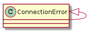

Since the SimpleClient and TelnetClient have started to share so much code I’m going to make an abstract base class to try and create a central place for the non-technology-specific code they need.
| BaseClient |
Since the connections raise socket errors which aren’t always easy to interpret, hopefully this will help make it easier to add sensible messages.
| handlesocketerrors |
| suppresssocketerrors |
This is just a sub-class of the ConnectionError so anything that traps that will catch it.

| ConnectionError |